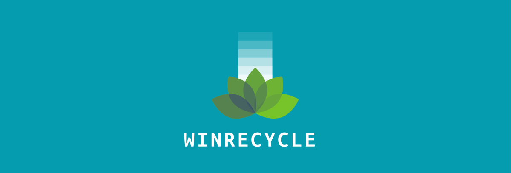

Bienvenido a WINRECYCLE, una plataforma innovadora diseñada para fomentar el reciclaje de manera responsable y entretenida. Al registrarte y utilizar los servicios de WINRECYCLE, aceptas cumplir con los términos y condiciones aquí establecidos. Te recomendamos leer detenidamente este documento para entender tus derechos y responsabilidades como usuario.
Objetivo de WINRECYCLE
WINRECYCLE tiene como principal objetivo incentivar el reciclaje mediante un sistema de recompensas que promueve la participación activa de los usuarios.
¿Quiénes somos?
Somos una plataforma digital comprometida con el cuidado del medio ambiente y la promoción de hábitos sostenibles a través del reciclaje. Nuestro objetivo es incentivar a los usuarios a participar activamente en el proceso de reciclaje mediante un sistema de recompensas, como cupones y puntos, que pueden ser canjeados por productos y servicios en tiendas asociadas.
Registro y Acceso a la Plataforma
Para poder participar en el programa de reciclaje, el usuario debe registrarse en la plataforma proporcionando información veraz y actualizada. El registro es gratuito y es necesario para acceder a todas las funcionalidades de la página, como la selección de categorías de reciclaje, el envío de fotos y la acumulación de cupones o puntos.
Una vez registrado, el usuario podrá iniciar sesión con su cuenta para acceder a las funcionalidades de la plataforma.
Proceso de validación
Los usuarios deberán seleccionar la categoría de reciclaje correspondiente (por ejemplo, papel, plástico, vidrio) y subir una foto demostrando que están llevando a cabo el reciclaje en cuestión. Es importante que la foto sea clara y legible, mostrando el proceso de reciclaje de manera evidente.
Validación: Las fotos enviadas serán revisadas por un equipo de moderadores que verificarán que la actividad de reciclaje se ha realizado correctamente. En caso de que la foto sea aprobada, el usuario recibirá cupones o puntos de acuerdo con la actividad realizada.
Rechazo de foto: Si la foto no cumple con los requisitos establecidos o no muestra evidencia suficiente de la actividad de reciclaje, será rechazada. En este caso, el usuario podrá intentar nuevamente subir otra foto.
Consultar Calidad del Aire por Ciudad (Chile)
Contacto
Para cualquier duda, consulta o aclaración sobre estos términos y condiciones, el usuario puede ponerse en contacto con el equipo de soporte de WINRECYCLE a través de la sección de nuestro correo: soporte@winrecycle.cl.
Encuéntranos en Avenida Colón #2766, Talcahuano, Bíobio.
Fecha de Última Actualización: 27/06/2025
Gracias por formar parte de WINRECYCLE y contribuir al cuidado del medio ambiente mediante el reciclaje y el uso responsable de recursos.
© 2025 WINRECYCLE. Todos los derechos reservados